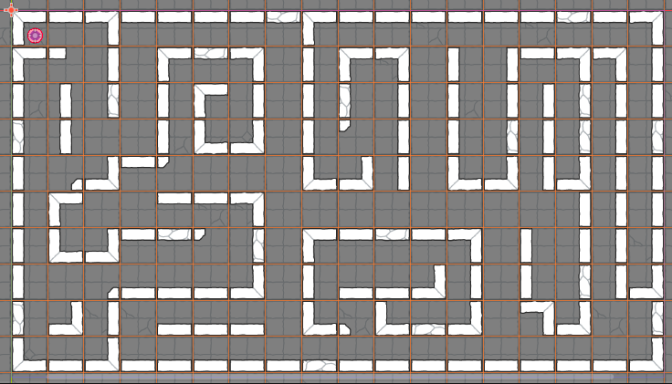

Section 6 of 7
Next Section →
Section 6: Designing the Maze
Create a fun, playable maze layout using your TileMapLayer tools, then test your player character navigating the paths.
Section Progress: 0%
1
Maze Design Options
You have two choices for creating your maze layout. Choose the one that works best for you:
Option A: Design Your Own Maze (Recommended)
- Sketch a simple maze on grid paper or in a drawing app
- Start with an entrance and an exit
- Create winding paths using the walls you already know how to paint
- Keep your maze size manageable (your grid in Godot is 18x10 tiles)
Option B: Use a Maze Generator for Inspiration Only
- Visit mazegenerator.net to see examples of maze layouts
- Important: These mazes are for personal/educational inspiration only. Do not copy them directly for any commercial project.
- Set the generator to Width: 18, Height: 10 to see a sample layout
- Use the pattern as inspiration to draw your own unique maze
⚠️ License Notice: The mazes from Maze Generator are not free for commercial use. For this class project it is okay to use, but if you were to publish or monetize this game, you would need to create your own. Always check the license of any assets or content you use in your projects!
2
Creating Your First Real Level
Instead of reusing the test level, we'll create a dedicated scene for your first maze level.
- Go to Scene → New Scene or press Ctrl + N
- Click "Other Node" and select a plain "Node2D" as the root
- Click "Create"
- Press Ctrl + S to save the scene
- Name it "Level1.tscn"
- Save it in your project folder (root directory is fine)
💡 Pro Tip: Creating separate level files (Level1, Level2, etc.) makes it easy to build a multi-level game later!
🏗️ Setting Up the Level Structure
- With the root Node2D selected, add a TileMapLayer child node
- Rename it to "Background"
- Add another TileMapLayer child node
- Rename it to "Walls"
- Your level is now ready for maze building!
3
Building the Maze Walls
Using your sketch as a guide, paint the walls of your maze:
- Select the "Walls" (TileMapLayer) node in Level1.tscn
- Choose a wall tile from the TileSet panel
- Use X and Z to rotate tiles as needed for corners and edges
- First, fill the entire blue boundary with floor tiles using the Background layer
- Then paint walls along the paths you designed, leaving a 1-tile wide passage for the player
- Create a clear start area at the top of your maze
- Create an exit area at the bottom (you'll add a goal later)
💡 Pro Tip: Start by painting the outer boundary walls first, then fill in the interior walls. This prevents accidentally trapping yourself!
4
Placing the Player Character
- In the FileSystem dock, find your player.tscn file
- Drag player.tscn into the Level1 viewport
- Select the Player node
- Switch to the Move tool (Q key)
- Drag the player to the entrance/top of your maze
- Make sure the player is positioned on a floor tile, not inside a wall
💡 Pro Tip: Use the arrow keys on your keyboard to nudge the player pixel-by-pixel for precise placement!
5
Final Testing
- Make sure Level1.tscn is your current open scene
- Press F5 to run your game (may prompt to select a main scene)
- If prompted, select Level1.tscn as the main scene
- Use the Arrow Keys to navigate through your maze
- Check that walls block your movement correctly
- Verify you can reach the exit at the bottom
- Make note of any spots where you can walk through walls (missing collision)
- Stop the game with F8 and fix any issues
Common Maze Issues and Fixes
- Player walks through a wall: Add collision polygon to that tile type in the TileSet
- Path is too narrow: Use the Eraser tool to widen passages to 2 tiles
- Player gets stuck on invisible barriers: Check for leftover collision polygons on floor tiles
- Maze feels too short/easy: Add more twists and turns using the Paint tools
- TileSet not showing saved collision: Make sure you saved the .tres file and loaded it in both layers
Next Steps: Now that you have a functional maze level, the next section will teach you how to create a Start Scene and a Win Scene, and connect all three scenes into a complete game loop!

Figure 6.6: The final test - navigating the completed Level1 maze!